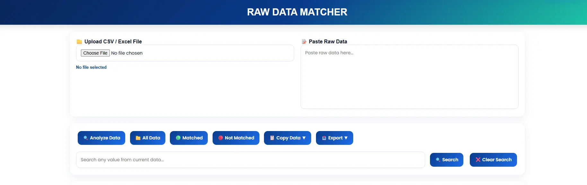
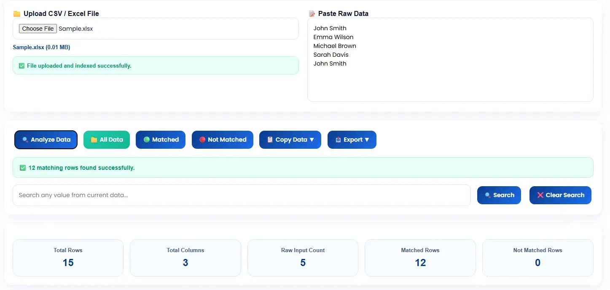
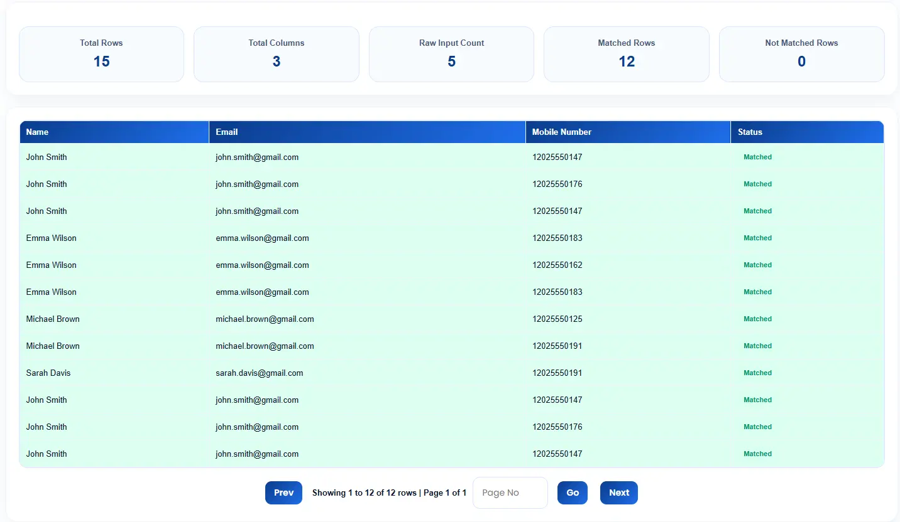
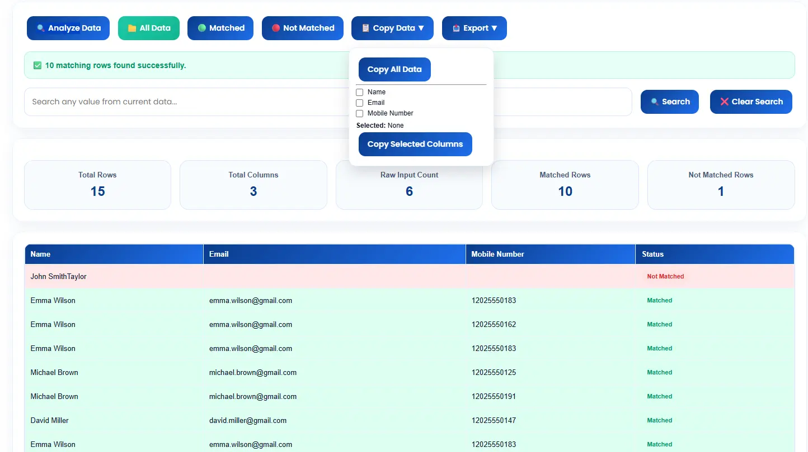

How to Find Matching Data in Excel & CSV Files Online (Fast & Free)
Compare Excel and CSV data instantly using Raw Data Matcher.
Try Raw Data Matcher ToolWorking with large Excel spreadsheets and CSV files often requires finding matching records quickly. Manually searching through thousands of rows can be time-consuming and error-prone, especially when handling customer databases, lead lists, inventory records, sales reports, or business datasets.
Vicohi Raw Data Matcher makes the process simple. Upload your spreadsheet, paste raw data, and instantly identify matching records. You can search within results, copy matched values, export data, and even copy individual columns separately.

What Is a Raw Data Matcher?
A Raw Data Matcher is a spreadsheet comparison tool that checks whether values from your raw input exist inside an uploaded Excel or CSV file.
Instead of manually using formulas such as VLOOKUP, XLOOKUP, INDEX MATCH, or filters, the tool automatically scans your data and displays matching records instantly.
Why Finding Matching Data Is Important
Businesses and professionals often need to compare datasets to verify records, validate information, and locate specific entries.
- Verify customer databases
- Check lead generation data
- Validate inventory records
- Compare sales reports
- Match email lists
- Analyze large spreadsheets quickly
Accurate matching improves productivity and helps eliminate manual spreadsheet work.

How to Find Matching Data Using Vicohi Raw Data Matcher
Step 1: Upload an Excel or CSV File
Upload your spreadsheet containing the data you want to compare.
- Excel XLSX Files
- CSV Files
- Large Datasets
Step 2: Paste Raw Data
Paste your raw values into the Raw Data input section. Each value is automatically checked against the uploaded spreadsheet.
Step 3: View Matching Results
The tool instantly scans the spreadsheet and displays records that match your raw data input.
Matching rows are shown below the tool, making it easy to verify results without manually searching through spreadsheets.

You can use our tool here: Use Raw Data Matcher Tool for instant matching results.
Step 4: Search Within Matched Data
When dealing with hundreds or thousands of matched records, locating a specific value can become difficult.
The built-in search feature allows users to instantly find a particular record within the matched dataset.
- Search names
- Search emails
- Search IDs
- Search phone numbers
- Search custom values
Step 5: Copy or Download Matched Data
Once matching records are identified, users can copy results directly or download them for further analysis.
- Copy matched rows
- Download matched data
- Export spreadsheet results
Advanced Features of Vicohi Raw Data Matcher
Column-Wise Data Copy
One of the most powerful features of the tool is column-wise copying.
Imagine your matched results contain multiple columns such as Name, Email, Phone Number, City, and Company.
Instead of copying the entire dataset, users can copy only the column they need with a single click.
- Copy Names Only
- Copy Emails Only
- Copy Phone Numbers Only
- Copy IDs Only
- Copy Any Specific Column
Large Dataset Processing
The tool is optimized to process large Excel and CSV files efficiently while maintaining fast performance.
Fast Search Technology
Instantly locate records inside matched results without manually scrolling through thousands of rows.
Accurate Matching Engine
Advanced matching logic helps identify records quickly and accurately.

Benefits of Using Vicohi Raw Data Matcher
- Fast Spreadsheet Matching
- Excel & CSV Support
- No Complex Formulas Required
- Search Matched Results
- Copy Individual Columns
- Download Matching Records
- User-Friendly Interface
- Large Dataset Compatibility
- Accurate Data Validation
Who Can Use This Tool?
- Data Analysts
- Digital Marketers
- Lead Generation Specialists
- Sales Teams
- E-commerce Businesses
- Researchers
- Students
- Database Managers
Start Matching Your Data Now
Upload Excel/CSV and paste raw data to get instant matches.
Before matching records, it's often a good idea to clean your spreadsheet and remove duplicate entries. If your Excel or CSV file contains repeated rows, check out our guide on how to remove duplicates in Excel and CSV files for a faster and more accurate matching process.
Frequently Asked Questions
Can I find matching data in Excel files?
Yes. Upload your Excel spreadsheet and compare it with raw data instantly.
Can I match CSV files?
Yes. The tool supports CSV files and can identify matching records quickly.
Can I search within matched results?
Yes. The built-in search feature allows you to find specific values inside the matched dataset.
Can I copy only one column from the results?
Yes. The column-wise copy feature allows users to copy any specific column separately.
Can I download matched records?
Yes. Matched results can be exported and downloaded for future use.
Is Vicohi Raw Data Matcher free?
Yes. Users can upload files, compare records, search data, copy columns, and export matched results.
Start Matching Your Data Now
Upload Excel/CSV and paste raw data to get instant matches.
🚀 Open Raw Data Matcher